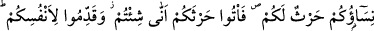
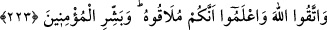

bulunmayın)” âyeti nâzil oldu. Bu âyet inince müslümanlar, îtizâl; yâni uzak durma
kelimesinin zâhirî mânâsını alarak ay hâlinde olan kadınları evlerinden çıkarmaya
başladılar. Bir gurup insan Hz. Peygamber’e gelerek: “Ya Rasûlallah! Soğuk pek
şiddetli, giyecek elbiselerimiz ise pek azdır. Eğer biz, ay hâlindeki kadınlara ayrı ve
özel bakarsak ev halkının artakalanı helâk olacak. Yok eğer diğer âile fertlerine bakıp
bunları ihmâl edersek bu kez bunlar helâk olacak” diye şikâyette bulundular. Buna
karşılık Allah Rasûlü: “Siz, Acemlerin yaptığı gibi hayızlı kadınları evlerinizden
çıkarmakla değil, hayız hâlinde onlarla cima etmeyi terketmekle emrolundunuz.”[160]
buyurdular. Bu ise Yahûdî ve Hıristiyanların yaptıklarına nazaran orta yoldur. Çünkü
Yahûdîler bu durumdaki kadınları evden çıkarıyorlar, Hıristiyanlar ise onlarla cimâ’
edip hayızlı oluşlarına aldırmıyorlardı.
Kadınlar hayızdan temizleninceye veya hayız kanının akması kesilinceye kadar onlarla
cima etmek haram kılınmıştır. Ebû Hanîfe’ye göre, kadının hayızlı olduğu günler on
güne bâliğ olunca gusletmese dahi onunla cima etmek câizdir. Hayız müddetinin en azı
olan üç gün içerisinde, kanın akması durursa, gusletmeden veya üzerinden bir namaz
vakti geçmeden, cima câiz değildir.
Hayızlı kadınlar gusledip temizlendikten sonra onlara, Allah’ın size helâl kıldığı
yerden; yâni ön taraftan yanaşmanızda bir beis yoktur. Şüphesiz Allah, günahlarına
çokça tevbe edenleri, hayızlı kadınlarla cimâ etmek ve Allah’ın uygun görmediği yerden
kadınlara yaklaşmak gibi kötülüklerden uzak durup temizlenenleri sever.
223. Kadınlarınız sizin için bir tarladır. Tarlanıza nasıl dilerseniz öyle varın.
Kendiniz için önceden (uygun davranışlarla) hazırlık yapın. Allah’dan korkun,
biliniz ki siz O’na kavuşacaksınız. (Yâ Muhammed!) mü’minleri müjdele!
Nutfenin, çocuğun aslî maddesi, tohumun da bitkinin temel maddesi oluşu hasebiyle
aralarındaki benzerlikten ötürü kadınlar ekim yerlerine benzetilmiştir. “Hars” ile
“zer’” kelimelerinin mânâları arasında fark vardır. “Hars”; tohumu toprağa ekmek,
“zer’” ve zirâat ise atılan tohumu gözetip yetiştirmek; bitirmek mânâsına gelir. Bu fark
sebebiyle Allah Teâlâ: “Şimdi bana, ektiğinizi haber verin. Onu siz mi
bitiriyorsunuz. Yoksa bitiren biz miyiz?” (el-Vâkıa, 56/63-64) buyurmuş ve “hars”i
kullara, “zer’”i ise kendisine nisbet etmiştir.
Kadınlara tarla denilince, onlarla cinsî münâsebete de “varma” anlamına “ityân”
tabiri kullanılmıştır. Varacağınız yer, ekim yeri olan ön taraf olmak üzere, kadınlara
istediğiniz taraftan dilediğiniz şekilde yaklaşabilirsiniz. Kadının arka tarafı, ekim yeri